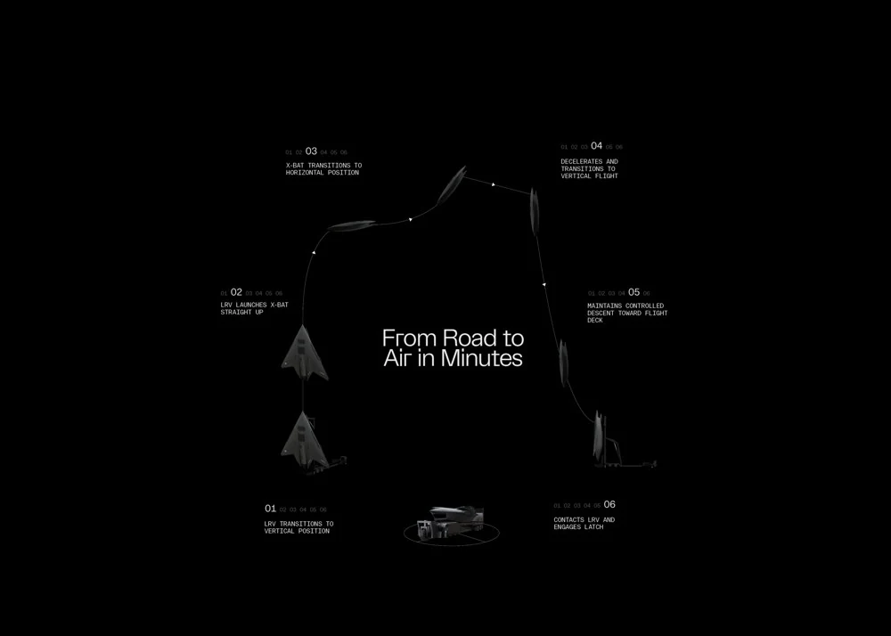

Shield AI · Sr. Staff Mechanical Engineer
X-BAT Wing-fold
In my role as Sr. Staff Mechanical Engineer at Shield AI, I work on actuated systems and various mechanical integrations as part of the Mechanical Systems team. My biggest project to date has been the conceptual design and analysis of the X-BAT wing fold system, one of the most ambitious fighter jet wing fold systems in the last several decades.
This wing fold system uses hydraulic actuators to fold a very large portion of the wingspan into an extremely small width and height to enable transport of the X-BAT vehicle on common U.S. Air Force transport aircraft. It has a double-hinge design coupled to a large bell crank and dual hydraulic actuators to rotate each side of the wing through roughly 180 degrees of motion. I owned the wing-fold system including mechanism design, planform impacts, door layouts and down-locks, structural lock-pins, actuator sizing, and the hydraulic subsystem.

